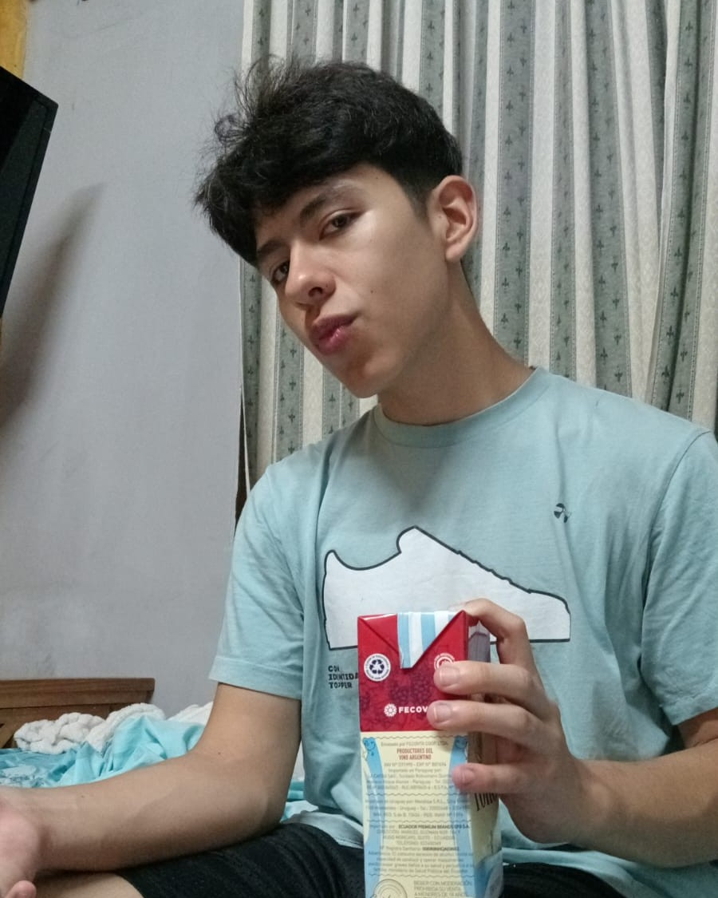
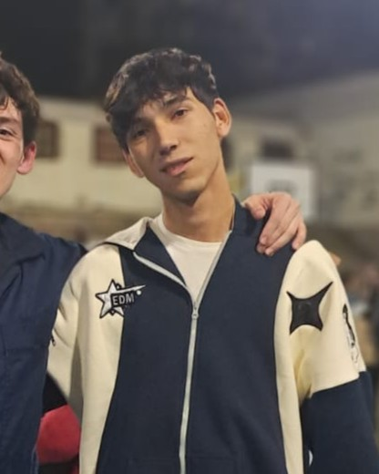
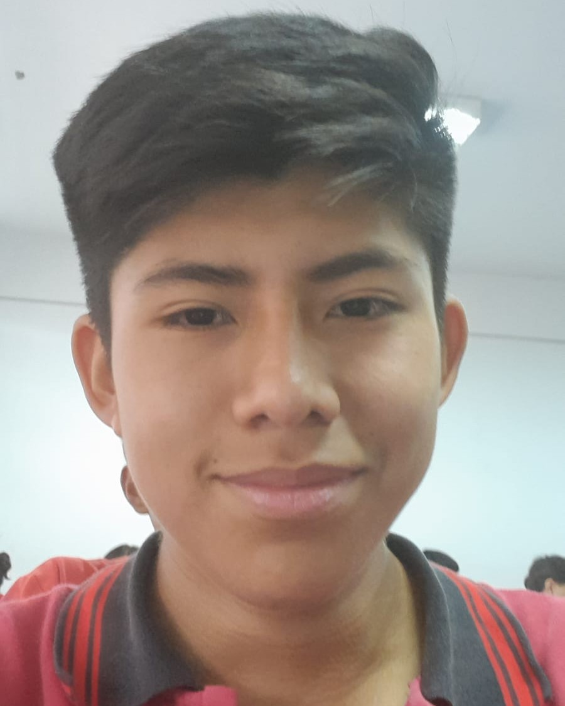
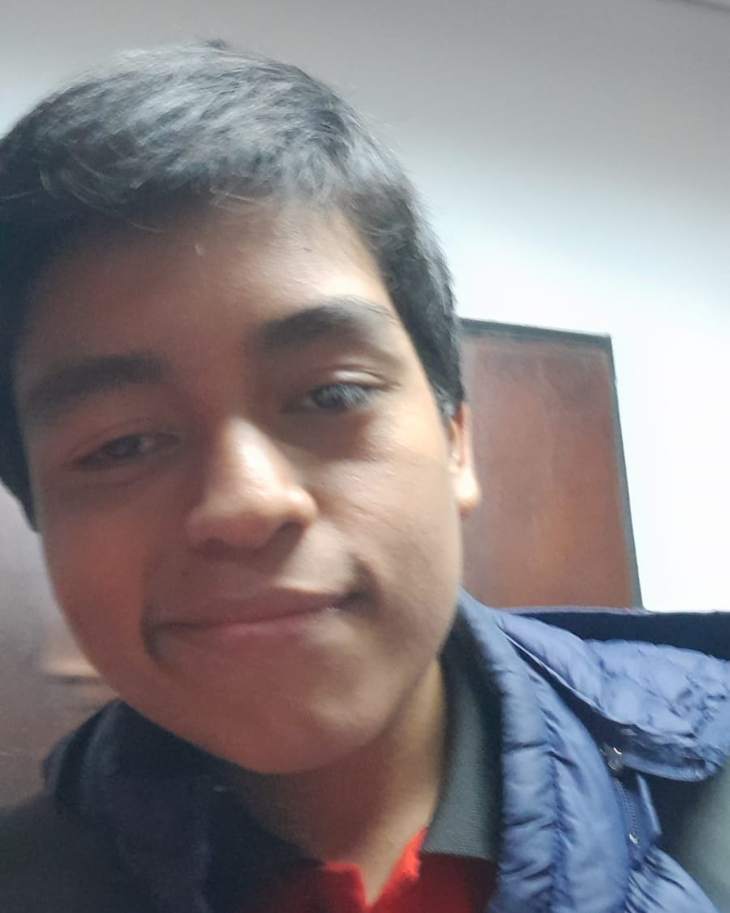

MATEO IGNACIO MENDIETA MORALES

ROL: Lider del Grupo
Alumno de la escuela de minas - Especialidad: Tecnico informatico - 3er año (ciclo superior).
Conoce pseint, c++, html, css, sql basico.
Sabe gestionar el tiempo, organizar, estructurar y asginar a cada integrante del equipo a una seccion de trabajo especifica segun su habilidad
DAVID ISMAEL PALACIOS JUAREZ

ROL: Integrante del Grupo
Alumno de la escuela de minas - Especialidad: Tecnico informatico - 3er año (ciclo superior).
Conoce de pseint, c++, html, css, sql basico.
Responsable, sabe trabajar en equipo, buena comunicacion, ayuda si un integrante no puede solo
ERICK ALEJANDRO NEUMAN

ROL: Integrante del Grupo
Alumno de la escuela de minas - Especialidad: Tecnico informatico - 3er año (ciclo superior).
Conoce pseint, c++, python, html, css, sql basico.
Bueno programando, detallista, sabe trabajar en grupo, investiga nuevas cosas para mejorar, responsable con los tiempos
LAUTARO JOSE LUIS MERCADO
ROL: Integrante del Grupo
Alumno de la escuela de minas - Especialidad: Tecnico informatico - 3er año (ciclo superior).
Conoce pseint, c++, html, css, c++, sql basico.
Adaptabilidad, aprendizaje rapido, busca fallos o bugs en el codigo, ordenado y responsable
OCTAVIO CRISTIAN LAMAS MENDEZ

ROL: Integrante del Grupo
Alumno de la escuela de minas - Especialidad: Tecnico informatico - 3er año (ciclo superior).
Conoce de pseint, c++, html, css, sql basico.
Bueno trabajando en grupo, rapido entendimiento de codigo ajeno, rapido aprendizaje, tester
IGNACIO ELIAS JORQUI

ROL: Integrante del Grupo
Alumno de la escuela de minas - Especialidad: Tecnico informatico - 3er año (ciclo superior).
Conoce de pseint, c++, html, css, sql basico.
Rapido trabajando, responsable con su trabajo, documentacion de codigo, sabe trabajar en equipo, empatia y ayuda con los compañeros